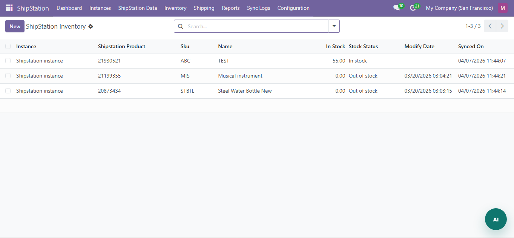

Product Screens and Flow Walkthrough
Replace the image files below with your real screenshots from static/description/. The structure is designed to mirror premium competitor listings that guide buyers through setup, operations, and proof of workflow.

1. Instance Setup and Connection
Show the screen where users configure the ShipStation account and related integration settings.
2. Dashboard and Operational Overview
Highlight important shipping metrics, totals, or operational visibility screens available in your module.

3. Order Synchronization Flow
Show how order-related records move into the shipping workflow and how the team manages fulfillment preparation.

4. Product or Field Mapping
Use mapping screenshots to show flexibility, operational control, and better data alignment between systems.

5. Shipping Rates and Label Workflow
Buyers often look for this section first. Use strong screenshots here because label generation is a key conversion point.
6. Shipment and Tracking Flow
Show shipment processing, tracking details, or delivery-related sync records that help users trust the flow.

7. Inventory or Fulfillment Visibility
Add any stock, package, warehouse, or shipping-related operational screen relevant to your connector.

8. Logs, Reports, and Monitoring
This gives proof of maturity. Buyers want to see how the app helps them review activity and handle issues.